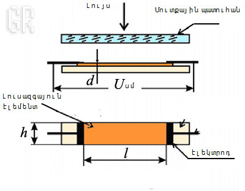

Ինչպես է Միանում Ֆոտոռեզիստորը Ardunio-ին
Ֆոտոռեզիստորը կիսահաղորդչային սարք է, որը լույսի ազդեցության տակ նվազեցնում է էլեկտրական դիմադրությունը(որոշ տիպերի մոտ դիմադրությունը նվազում է 2-3 կարգով): Ֆոտոռեզիստորի հիմնական մասը կազմում է կիսահաղորդչային էլեմենտը,որը տեղադրված է այնպես,որ լույսը ընկնի վրան:
Ֆոտոռեզիստորի աշխատանքը հիմնված է լուսային էներգիայի կլանման արդյունքում էլեկտրոնների առաջացման վրա,ինչի հետևանքով նվազում է դիմադրությունը: Ֆոտոռզիստորի աշխատանքը շատ պարզ է, այդ իսկ պատճառով այն լայնորեն կիրառվում է գիտության տարբեր ճյուղերում և տեխնիկայի մեջ:Դա բարձրացվում է Ֆոտոռեզիստորի բարձր զգայունությամբ, փոքր չափերով և պարզ կառուցվածքով, երկարակեցությամբ:
Անհրաժեշտ էլեմենտներ
- Ardunio Uno/Ardunio Nano/Ardunio Mega
- breadbouard
- 1 Ֆոտոռեզիստոր
- 1 լեդ լույս
- 2 ռեզիստոր 220օմ
- լարեր «պապա-պապա»
#define SENSOR A0
#define LED 9
unsigned int value = 0;
void setup() {
pinMode(LED, OUTPUT);
pinMode(SENSOR, INPUT);
}
void loop() {
value = analogRead(SENSOR);
if (value<500) digitalWrite(LED, HIGH);
if (value>500) digitalWrite(LED, LOW);
}
Կոդի Մեկնաբանություն
- անալոգային AO մուտքի արժեքը վերագրեցինք SENSOR-ին՝ #define ֆունկցիայի օգնությամբ:
- unsigned int ցույց է տալիս, որ value կարող է ընդունել միայն դրական թիվ, ի սկզբանե= է 0-ի:
- if պայմանի օպերատրի օգնությամբ սահմանում են համապատասխան գործողությունը՝ պայմանը բազմապատկելու դեպքում: